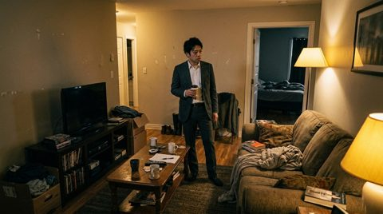

REF01 主角
30多岁公司职员，略疲惫，深色西装外套，白衬衫，黑发，眼下有轻微黑眼圈，普通都市男性，不夸张恐惧表情。
Prompt Examples
写提示词时先固定角色、场景和关键道具，再为每个镜头补构图、视角、光线、质感和动作意图。
30多岁公司职员，略疲惫，深色西装外套，白衬衫，黑发，眼下有轻微黑眼圈，普通都市男性，不夸张恐惧表情。
普通单身公寓，玄关鞋柜、钥匙盘、客厅沙发、半开的卧室门，暖黄灯但阴影很重。
一把普通银色门钥匙，旧钥匙环上有磨损，孤零零放在暗色木桌，强烈侧光，投下细长阴影。
公式
类型与比例 + 场景时间 + 主体动作 + 构图景别 + 视角镜头 + 光线色调 + 画面细节 + 质感风格 + 限制项。
现实主义悬疑短片单帧，16:9，傍晚开放式办公室，冷白顶灯，窗外城市灯光，
30多岁男职员独自坐在工位电脑前，深色西装外套白衬衫，
桌面有文件夹、咖啡杯、键盘和手机，构图为中远景，轻微俯视，
人物偏画面右侧，空间空旷，冷色调，低对比胶片颗粒，真实电影质感。图生视频提示词不需要重复所有静态细节，重点写运动、速度、光线变化、焦点变化和声音节奏。
镜头从办公室走道缓慢推向主角工位，速度很慢，
冷白灯轻微闪烁，画面保持现实主义悬疑质感，
城市窗光在背景虚化，不出现夸张恐怖元素。
